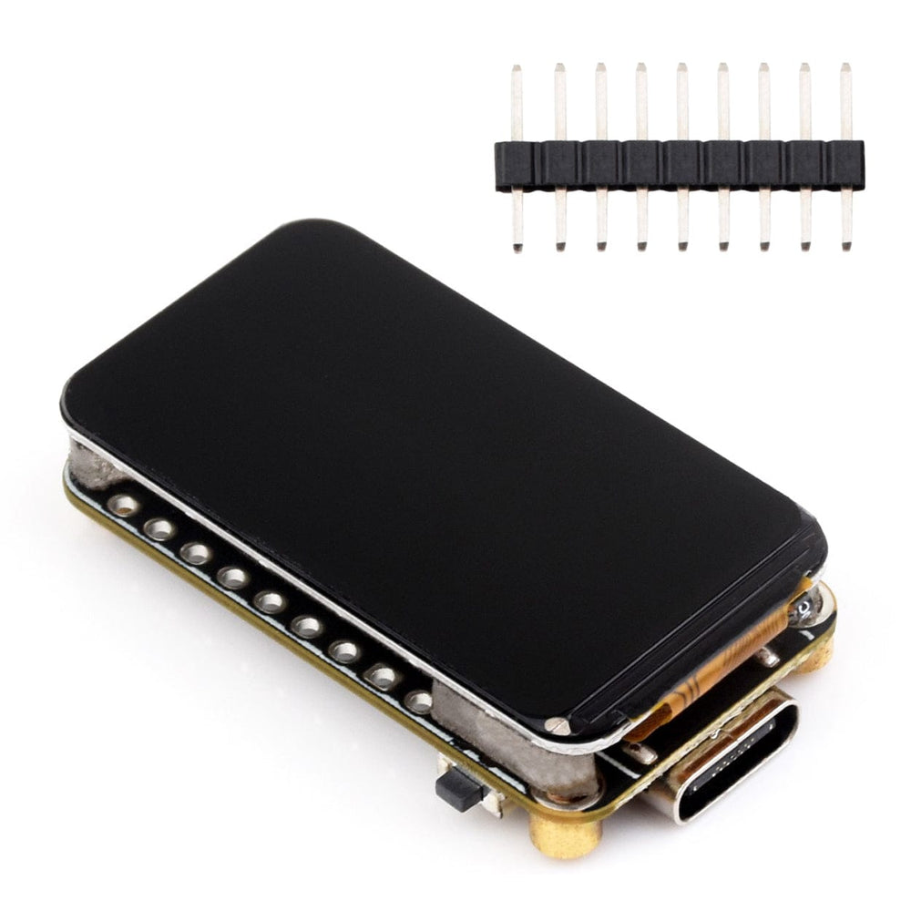
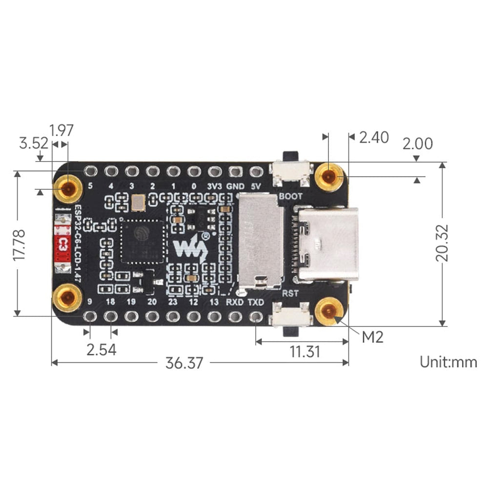
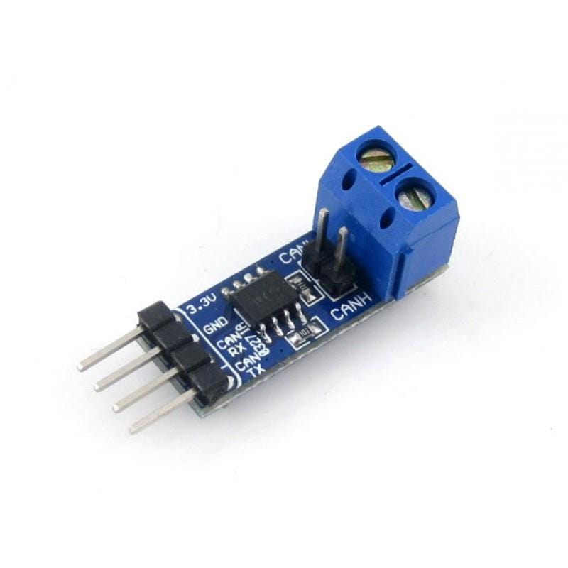
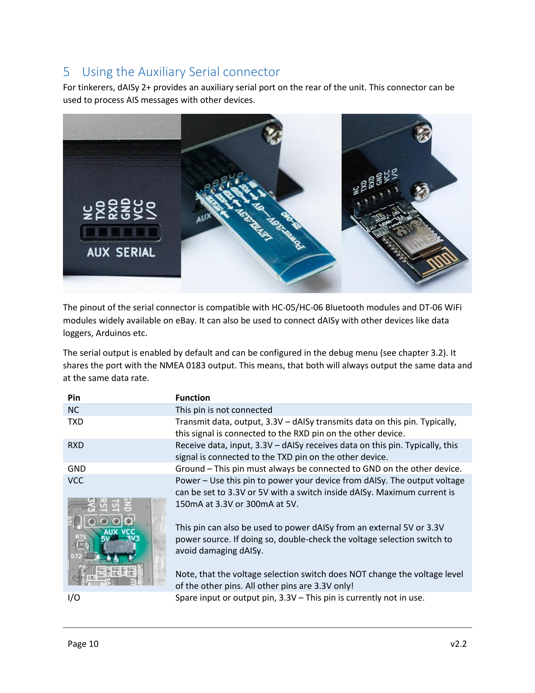

Wiring a Waveshare ESP32-C6-LCD-1.47, an SN65HVD230 CAN transceiver, and a Wegmatt dAISy 2+ AIS receiver into a NMEA 0183 → NMEA 2000 bridge with on-screen target list.
The converter reads !AIVDM sentences from a dAISy 2+ AIS receiver over a 3.3 V TTL UART link, decodes each AIS message, and re-emits it as the correct NMEA 2000 PGN onto the CAN bus through an SN65HVD230 transceiver. The onboard 172×320 ST7789 LCD shows decoded targets with type, speed, course and name; a sailboat icon flashes orange every time a PGN is sent.
| Item | Notes |
|---|---|
| Waveshare ESP32-C6-LCD-1.47 (non-touch SKU) | RISC-V single core, 160 MHz, 8 MB flash, 172×320 ST7789 LCD on SPI. USB-C. |
| SN65HVD230 CAN transceiver breakout | 3.3 V-native CAN transceiver. The Waveshare variant has friendly RX/TX silkscreen labels and a 2-pole screw terminal for CAN_H / CAN_L. |
| Wegmatt dAISy 2+ AIS receiver | Dual-channel AIS receiver with USB and 3.3 V TTL AUX serial. Powered from its own USB. |
| Terminated NMEA 2000 backbone cable | Two 120 Ω terminators in place; ~60 Ω end-to-end across CAN_H / CAN_L when unpowered. |
| Hookup wire | Six conductors, 22–26 AWG. Solid core is fine for breadboard / dev-board headers. |
| USB-C cable for ESP32-C6 | Powers and programs the converter from your computer. |
| USB-A cable for dAISy 2+ | Powers the AIS receiver separately. |



3.3V / GND / RX / TX. Two-screw terminal on the right: CANL / CANH. Photo: The Pi Hut.
NC TXD RXD GND VCC I/O. Source: Wegmatt dAISy 2+ AIS Receiver Manual v2.2, p.10.| From | To | Purpose |
|---|---|---|
| ESP32-C6 GND | SN65HVD230 GND & dAISy 2+ AUX pin 4 (GND) | Common ground — wire first. |
| ESP32-C6 3V3 | SN65HVD230 3.3V | Powers the transceiver. Do not use 5V. |
| ESP32-C6 GPIO 4 | SN65HVD230 TX | CAN frames out of the ESP32, into the transceiver's driver input. |
| ESP32-C6 GPIO 5 | SN65HVD230 RX | Decoded CAN frames back into the ESP32. |
| ESP32-C6 GPIO 19 | dAISy 2+ AUX pin 2 (TXD) | NMEA 0183 stream from the AIS receiver into the ESP32's UART1 RX. |
SN65HVD230 CANH | Backbone CAN_H | Connect last, after bench tests pass. |
SN65HVD230 CANL | Backbone CAN_L | Connect last. |
TXD signal is 3.3 V regardless of the unit's VCC switch position. No level shifter or voltage divider is needed to feed it into the ESP32-C6.
Wire in this order. At each stage the worst-case failure mode is harmless. Connections to the live NMEA 2000 bus come last, after the source side is proven on the bench.
Always make and break connections while the ESP32 is off USB. Live wiring is how 3.3 V GPIOs get fried.
Common ground prevents floating-reference glitches and ESD events on the signal pins.
dAISy AUX pin 4 (GND) ──┐
├── ESP32-C6 GND ── SN65HVD230 GND
└── (star or daisy-chain, either is fine)
ESP32-C6 3V3 ────► SN65HVD230 3.3V
The dAISy keeps its own USB power supply — do not tie its VCC to anything.
If your SN65HVD230 breakout has an Rs pin (slope-rate control), tie it to GND. Most boards have this already set internally; the Waveshare variant pictured does.
dAISy AUX pin 2 (TXD) ────► ESP32-C6 GPIO19 ESP32-C6 GPIO 4 ────► SN65HVD230 TX SN65HVD230 RX ────► ESP32-C6 GPIO 5
The RX/TX labels on the Waveshare transceiver are written from the microcontroller's point of view, so they line up one-to-one with the ESP32 pin names. Leave CANH / CANL unconnected for now.
DAISY pill, and a dim boat icon.DAISY pill should turn solid green. It latches — once green, stays green.n2k:N counter at the bottom-right increments by one.If DAISY stays gray for a minute or more with the dAISy USB-powered and antenna connected, that's a source-side wiring or pin-assignment problem to debug before plugging into the bus.
CAN_H / CAN_L on the unpowered backbone (both 120 Ω terminators in place, in parallel).SN65HVD230 CANH ────► backbone CAN_H SN65HVD230 CANL ────► backbone CAN_L
n2k counter climbs as AIS targets come in. The 0183:M count on the same line is total NMEA 0183 lines seen on UART — a higher number than n2k is normal, because multi-fragment AIS messages take two 0183 lines to make one decoded message.Each target row, left to right by importance:
| Column | Meaning |
|---|---|
| Type | 3-char vessel-type abbreviation, coloured by type (TNK=tanker red, CRG=cargo amber, PAX=passenger blue, FSH=fishing magenta, SAL=sailing green, TUG=tug olive, …). |
| Kts | Speed over ground in knots. -- when unknown. |
| Deg | Course over ground in degrees. --- when unknown. |
| Name | AIS-broadcast vessel name when known, otherwise last 8 digits of MMSI. The whole row is colour-coded by Class-A nav status (green = under way using engine, lime = under sail, orange = at anchor / moored, red = NUC / restricted / aground / SART, blue = engaged in fishing, black = Class B or unknown). |
Targets that go silent for more than 5 minutes auto-evict from the list. The footer carries the live-target count, uptime, NMEA 2000 source address, and the running n2k:N - 0183:M message totals.
The CPU runs at 80 MHz and the backlight at ~40 % normally. After 5 minutes with no decoded AIS frames the backlight drops to ~5 %; any new AIS sentence or a press of the BOOT button on the C6 board restores it.
| Symptom | Likely cause |
|---|---|
| LCD blank or backlight off | Firmware did not finish boot. Re-flash. Check USB-C cable is data-capable. |
DAISY pill stays gray | No NMEA 0183 bytes reaching the ESP32. Check (a) dAISy is powered and antenna is connected; (b) the wire is on dAISy AUX pin 2 (TXD), not RXD; (c) the ESP side lands on GPIO 19, not GPIO 20 or another GPIO; (d) common ground between dAISy and ESP. |
| Boat icon never flashes | NMEA 0183 sentences arriving but failing to decode. Open a serial monitor — the 0183:M counter should be climbing. If it is but n2k:N stays at zero, the dAISy isn't seeing valid AIS messages (out of range or antenna issue). |
n2k counter climbs but boat board sees nothing | Backbone wiring. Verify ~60 Ω across CAN_H/CAN_L with bus powered off, both terminators present, 12 V applied to the backbone. |
| ESP32 runs hot | Above ambient warm is normal for an ESP at 80 MHz with TFT backlight. If it's uncomfortable to touch, leave the auto-dim alone (it'll save ~30 % power after 5 min). |
This sequence avoids any case where a signal pin floats above a missing ground.